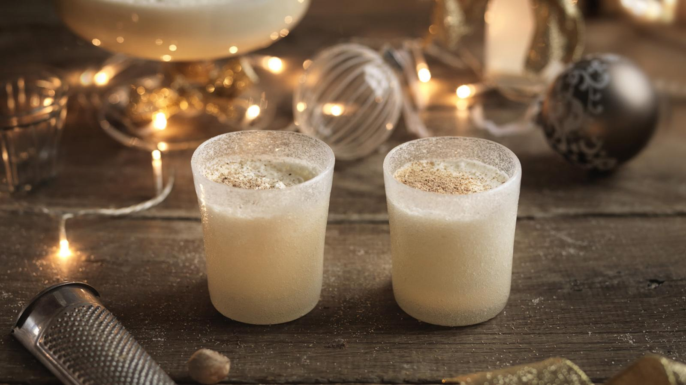

Eggnog

So Christmassy
This deliciously creamy eggnog recipe is a little taste of Christmas history. George Washington, the first American president, even made his own eggnog, and is very clear about ageing it for a few days to let the flavour mellow.
Ingredients
- 6 medium free-range eggs (preferably organic and as fresh as possible), separated
- 150g/5½ oz golden caster sugar
- 500ml/18fl oz whole milk
- 400ml/14fl oz double cream
- 350ml/12fl oz rum, bourbon or a mixture of the two, depending on your preference
- freshly grated nutmeg, to taste
Steps
- Whisk the egg yolks in a bowl with 100g/3½ oz of the caster sugar until the mixture is pale yellow and thick (this is best done with an electric handheld mixer).
- Stir in the milk, double cream, and the rum and/or bourbon. You can add a little grated nutmeg as well, if you like your nog this way.
- Pour the mixture into two 750ml/1½ pint bottles with stoppers and store in the fridge for up to two weeks. (The alcohol will prevent any spoilage of the eggs or cream.)
- Place the egg whites in a box and freeze until ready to serve the egg nog.
- When ready to serve, defrost the egg whites into a clean metal or glass bowl. Using a handheld electric mixer, whisk the egg whites until foamy and opaque. Add the remaining 50g of sugar and whisk the egg whites until soft peaks form when the whisk is removed.
- Pour the egg nog from the bottles into a large bowl and fold in the egg whites until well combined. Ladle the egg nog into glass tumblers and serve with a little freshly grated nutmeg over the top of each glass.
Back